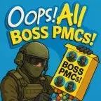

Mod
Oops! All Boss PMCs!
- Downloads
- 1,139
- Favourites
- 0
Description
This gives a boss brain to every PMC that spawns in raids.
Why?
Idk, I thought the name was funny and it’s a challenge for those who are masochists.
If you have DrakiaXYZ’s “No Boss PMC’s” this will obviously conflict…
Enjoy!
How to Install
Drag and drop into your SPT base folder like every other mod on the hub.
How to Configure
Credits
DrakiaXYZ for letting me steal his mod and make the inverse of it
Version
1.0.0
SPT ~3.11.0
Fika: unknown
1,139 downloadsUnknown size
No description was available in the snapshot.
VirusTotal: report 1